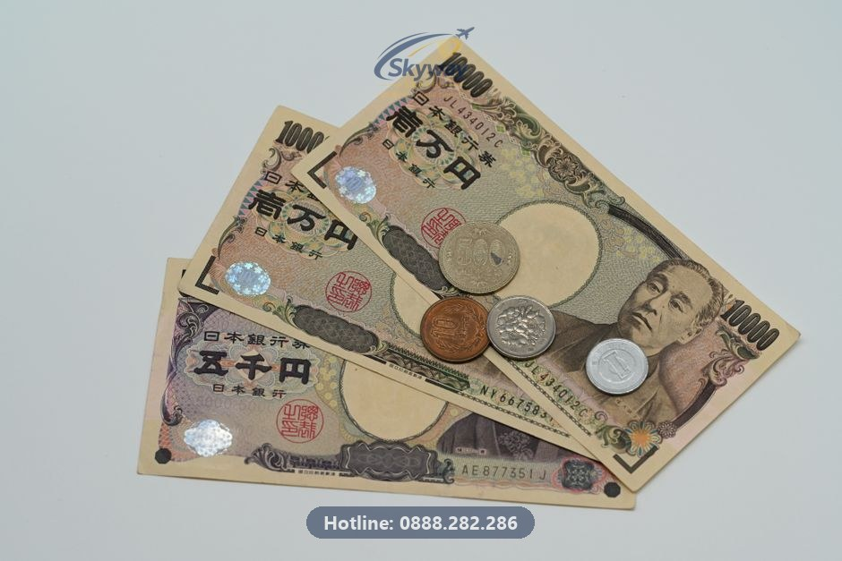
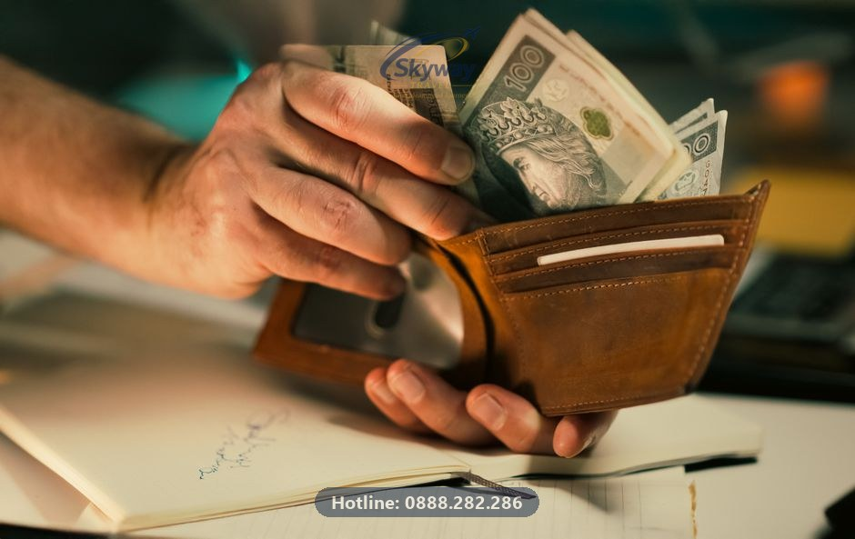

Hướng dẫn chuẩn bị số dư sổ tiết kiệm và xử lý hồ sơ tài chính vừa đủ ngưỡng cho chuyến du lịch Nhật Bản tự túc.

Cần nhớ: Sổ tiết kiệm xin visa Nhật nên duy trì từ 100 triệu đồng trở lên với lịch sử gửi trên 3 tháng, kết hợp dòng tiền thu nhập minh bạch để Lãnh sự quán đánh giá cao khả năng tài chính.
Lãnh sự quán Nhật Bản không công bố một con số cố định trên cổng thông tin chính thức, nhưng mục đích cốt lõi của việc chứng minh tài chính là xác thực hai yếu tố: bạn có đủ khả năng chi trả cho toàn bộ chuyến đi mà không cần nhờ đến nguồn tài chính bất hợp pháp tại sở tại, và bạn có đủ ràng buộc kinh tế để quay lại Việt Nam sau khi kết thúc hành trình. Theo kinh nghiệm hỗ trợ hồ sơ tại Visa Nhanh 24h, nhiều trường hợp khách hàng sở hữu sổ tiết kiệm lên đến hàng trăm triệu đồng nhưng vẫn bị từ chối cấp visa. Nguyên nhân nằm ở việc dòng tiền thu nhập hàng tháng không khớp, hoặc bảng lương và sao kê tài khoản ngân hàng không minh chứng được nguồn gốc số tiền đó.
Một chuyến đi du lịch Nhật Bản tự túc thông thường kéo dài từ 5 đến 7 ngày sẽ tiêu tốn các khoản chi phí tối thiểu cho vé máy bay khứ hồi, khách sạn, chi phí ăn uống và đi lại bằng tàu điện. Nếu thu nhập thực tế của bạn chỉ ở mức trung bình nhưng đột ngột xuất hiện một khoản tiết kiệm lớn sát ngày nộp, cơ quan xét duyệt sẽ ngay lập tức đặt dấu hỏi lớn về tính xác thực của bộ hồ sơ. Do đó, tài chính không chỉ là con số trên giấy mà phải là một bức tranh toàn cảnh thể hiện sự tích lũy có quá trình và phù hợp với thực tế công việc hiện tại của bạn. Bạn có thể tham khảo thêm các lưu ý tổng quan tại mục thủ tục visa khu vực châu Á trước khi bắt tay chuẩn bị chi tiết từng loại giấy tờ.
Khi tự túc xin visa Nhật Bản, câu hỏi thường trực của người nộp hồ sơ là sổ tiết kiệm cần bao nhiêu tiền. Dựa trên kinh nghiệm thực tế của đội ngũ xử lý hồ sơ, mức số dư an toàn và phổ biến nhất cho một chuyến du lịch kéo dài từ 5 đến 7 ngày thường dao động từ 100 triệu đồng trở lên. Con số này được tính toán dựa trên tổng chi phí cơ bản bao gồm vé máy bay khứ hồi, tiền phòng khách sạn tiêu chuẩn, chi phí ăn uống và phương tiện di chuyển công cộng như tàu điện hay xe buýt tại các thành phố lớn như Tokyo hay Kyoto.
Tuy nhiên, không phải cứ có sẵn 100 triệu là chắc chắn được duyệt. Lãnh sự quán đánh giá rất cao kỳ hạn của sổ tiết kiệm. Một cuốn sổ có kỳ hạn gửi từ 6 tháng trở lên hoặc đã được gửi từ lâu sẽ mang lại độ tin cậy lớn hơn rất nhiều so với cuốn sổ vừa được mở với kỳ hạn 1 tháng ngay trước thời điểm nộp hồ sơ. Sổ dài hạn chứng minh bạn có kế hoạch tài chính tích lũy rõ ràng, trong khi sổ ngắn hạn dễ khiến người xét duyệt nghi ngờ về nguồn tiền đi mượn tạm thời để đối phó với thủ tục hành chính.
Thời điểm bạn quyết định mở sổ tiết kiệm đóng vai trò quyết định trong việc hồ sơ có bị soi kỹ hay không. Một trong những lỗi sơ đẳng mà nhiều người mắc phải là dồn tiền gửi tiết kiệm ngay sát ngày nộp hồ sơ xin visa. Theo kinh nghiệm thực tế, nếu sổ tiết kiệm chỉ được mở trước ngày nộp vài ngày hoặc đúng tuần làm thủ tục, Lãnh sự quán sẽ dễ dàng nhận thấy sự bất hợp lý và yêu cầu giải trình hoặc từ chối thẳng thừng. Nguyên tắc an toàn là sổ tiết kiệm nên được duy trì và có lịch sử gửi trước đó ít nhất từ 3 đến 6 tháng.
Bên cạnh đó, khi xin giấy xác nhận số dư tài khoản tiết kiệm tại ngân hàng, bạn bắt buộc phải yêu cầu loại giấy tờ song ngữ Anh - Việt có mộc đỏ hợp lệ. Giấy xác nhận này cần thể hiện rõ thông tin chủ tài khoản, số tiền, kỳ hạn và trạng thái phong tỏa trong thời gian xin visa nếu cần thiết. Việc sử dụng giấy tờ chỉ có tiếng Việt hoặc thiếu các thông tin định danh chuẩn xác sẽ làm chậm quá trình xét duyệt hoặc khiến hồ sơ bị trả lại ngay từ khâu tiếp nhận ban đầu.

Sổ tiết kiệm chỉ là bề nổi của tảng băng tài chính, trong khi thu nhập hàng tháng mới là nền tảng chứng minh khả năng chi trả thực tế của bạn. Lãnh sự quán Nhật Bản thường yêu cầu cung cấp sao kê tài khoản nhận lương trong vòng 3 đến 6 tháng gần nhất để đối chiếu. Nếu bạn nhận lương qua chuyển khoản ngân hàng, việc in sao kê có mộc đỏ và thể hiện rõ tên công ty chi trả là lợi thế lớn, tạo sự liền mạch và minh bạch cho toàn bộ hồ sơ.
Tuy nhiên, thực tế tại Việt Nam có không ít người lao động nhận lương hoàn toàn bằng tiền mặt không qua hệ thống ngân hàng. Trong trường hợp này, bạn không thể chỉ nộp mỗi bảng lương nội bộ do công ty tự in mà cần kết hợp thêm giấy xác nhận công tác, xác nhận thu nhập có chữ ký của người đại diện pháp luật kèm theo bản sao hợp đồng lao động. Mối quan hệ giữa thu nhập hàng tháng và số dư trong sổ tiết kiệm phải có tính logic chặt chẽ; một người có mức lương cơ bản thấp nhưng sở hữu sổ tiết kiệm hàng trăm triệu đồng mà không giải trình được nguồn gốc tích lũy sẽ rất khó thuyết phục được nhân viên lãnh sự.
Không phải ai cũng sẵn có một khoản tiền lớn trong tài khoản khi có nhu cầu đi du lịch Nhật Bản. Nếu tài chính của bạn chỉ đang ở mức vừa đủ ngưỡng tối thiểu an toàn khoảng 80 đến 100 triệu đồng, bạn cần biết cách bù đắp các điểm yếu này bằng những chứng từ phụ trợ khác. Giải pháp đầu tiên là xây dựng một lịch trình chuyến đi thực tế, chi tiết từng ngày với mức chi tiêu hợp lý, ưu tiên các điểm tham quan công cộng miễn phí hoặc di chuyển bằng thẻ giao thông tiết kiệm để chứng minh bạn đã tính toán kỹ lưỡng.
Ngoài ra, việc đính kèm một bức thư giải trình ngắn gọn, trung thực bằng tiếng Anh hoặc tiếng Nhật giải thích về nguồn gốc khoản tiết kiệm vừa đủ của bạn — chẳng hạn như tiền tích góp từ công việc kinh doanh nhỏ hoặc tiền thưởng dự án — sẽ giúp giảm bớt sự nghi ngờ. Kết hợp thêm các tài sản phụ như giấy tờ sở hữu xe máy, ô tô hoặc hợp đồng cho thuê nhà nếu có sẽ là lớp đệm an toàn giúp hồ sơ sát ngưỡng vượt qua vòng thẩm định khắt khe.
Không phải ai cũng có sẵn hợp đồng lao động và bảng lương chuyển khoản đều đặn hàng tháng qua ngân hàng. Nhóm lao động tự do, freelancer, nghệ sĩ, hay chủ hộ kinh doanh cá thể thường gặp nhiều bối rối khi phải giải trình nguồn tiền trước cơ quan lãnh sự. Theo kinh nghiệm xử lý hồ sơ tại Visa Nhanh 24h, nếu bạn không có bảng lương công ty, hồ sơ tài chính cần được xây dựng dựa trên dòng tiền thực tế phát sinh từ hoạt động lao động hoặc kinh doanh hợp pháp.
Đối với hộ kinh doanh cá thể, giấy phép đăng ký kinh doanh và biên lai nộp thuế khoán hoặc thuế môn bài là những tài liệu bắt buộc phải có. Kèm theo đó là sao kê tài khoản ngân hàng của hộ kinh doanh hoặc tài khoản cá nhân dùng cho giao dịch thương mại trong 6 tháng gần nhất để chứng minh dòng tiền ra vào đều đặn. Nếu bạn là freelancer hoặc làm việc tự do qua các nền tảng số, hãy chuẩn bị hợp đồng dịch vụ, hóa đơn, biên bản nghiệm thu công việc và sao kê tài khoản nhận thù lao từ khách hàng hoặc đối tác.
Điểm mấu chốt để Lãnh sự quán tin tưởng nhóm hồ sơ này không nằm ở việc bạn có một cơ quan lớn đứng sau bảo lãnh, mà nằm ở tính logic của dòng tiền. Khi thu nhập đến từ nhiều nguồn khác nhau không có giấy xác nhận từ một công ty cố định, một bức thư giải trình ngắn gọn, trung thực kèm theo các bằng chứng giao dịch rõ ràng sẽ là điểm tựa quan trọng giúp hồ sơ vượt qua vòng thẩm định khắt khe.
Khi số dư sổ tiết kiệm chỉ vừa chạm ngưỡng tối thiểu và thu nhập hàng tháng không quá cao, việc bổ sung các tài sản phụ có giá trị gia tăng sẽ tạo thêm điểm tựa vững chắc cho hồ sơ xin visa Nhật Bản. Cơ quan xét duyệt luôn muốn nhìn thấy sự gắn kết của bạn với Việt Nam thông qua tài sản cố định, từ đó củng cố lý do bạn chắc chắn sẽ quay về sau chuyến đi.
Các tài sản có thể đưa vào hồ sơ bao gồm giấy chứng nhận quyền sử dụng đất và sở hữu nhà ở, đăng ký ô tô, hợp đồng cho thuê nhà có công chứng, hoặc danh mục đầu tư cổ phiếu, trái phiếu có xác nhận từ công ty chứng khoán. Tuy nhiên, cần lưu ý rằng đây chỉ là tài sản bổ trợ, không thể thay thế hoàn toàn cho sổ tiết kiệm và dòng tiền mặt thanh khoản. Một cuốn sổ tiết kiệm có kỳ hạn rõ ràng vẫn giữ vai trò quyết định trong việc chứng minh khả năng chi trả trực tiếp cho chuyến đi ngắn ngày.
Khi đưa các giấy tờ tài sản này vào hồ sơ, toàn bộ đều phải được dịch thuật và công chứng sang tiếng Anh hoặc tiếng Nhật theo đúng chuẩn quy định. Những lỗi sai sót nhỏ trong bản dịch thông tin tài sản có thể khiến cán bộ lãnh sự hoài nghi về tính xác thực. Quý khách có thể tham khảo thêm dịch vụ dịch thuật công chứng của chúng tôi để đảm bảo mọi giấy tờ pháp lý đạt tiêu chuẩn tiếp nhận khắt khe nhất.
Quá trình tự chuẩn bị hồ sơ tài chính thường vấp phải những lỗi kỹ thuật cơ bản do thiếu kinh nghiệm thực tế, dẫn đến việc hồ sơ bị đánh trượt một cách đáng tiếc dù đương sự có điều kiện kinh tế thật. Hiểu rõ những sai lầm này giúp bạn chủ động phòng tránh trước khi nộp hồ sơ lên cơ quan cấp visa.
Sai lầm phổ biến nhất là việc mượn tiền mở sổ tiết kiệm nóng ngay trước ngày hẹn nộp hồ sơ, sau đó rút ra ngay khi có giấy xác nhận số dư. C cán bộ lãnh sự có nghiệp vụ thẩm định rất sắc bén; họ dễ dàng nhận ra các sổ tiết kiệm mới tinh vừa được tạo sát ngày nộp mà không có lịch sử tích lũy dòng tiền hợp lý. Một lỗi khác là sử dụng sổ tiết kiệm đứng tên người thân nhưng thiếu giấy tờ chứng minh quan hệ gia đình hoặc văn bản cam kết bảo lãnh tài chính hợp pháp có xác nhận của địa phương.
Ngoài ra, sự chênh lệch bất hợp lý giữa thu nhập khai báo và thực trạng tài khoản cũng là nguyên nhân gây từ chối hồ sơ hàng đầu. Khai báo mức lương hàng chục triệu đồng nhưng tài khoản nhận lương luôn trống rỗng hoặc không có sao kê chứng minh sẽ ngay lập tức đưa hồ sơ vào diện nghi vấn gian lận thông tin. Tính trung thực kết hợp với sự chuẩn bị bài bản về mặt chứng từ luôn là chìa khóa duy nhất mang lại kết quả khả quan.
Nếu bạn đang gặp khó khăn trong việc cân đối số dư tài khoản, không biết cách xử lý chứng từ thu nhập hoặc lo lắng hồ sơ của mình dễ bị từ chối, việc tìm kiếm sự hỗ trợ từ đơn vị tư vấn chuyên nghiệp là giải pháp an toàn và tiết kiệm thời gian. Tại Công ty TNHH Du lịch Skyway (thương hiệu Visa Nhanh 24h), chúng tôi xây dựng quy trình làm việc chuẩn mực nhằm bảo vệ quyền lợi tối đa cho khách hàng.
Khi tiếp nhận hồ sơ, đội ngũ chuyên viên tại văn phòng Số 4, phố Phạm Tuấn Tài, Cầu Giấy, Hà Nội sẽ tiến hành đánh giá sức khỏe tài chính thực tế, chỉ ra những điểm yếu cần khắc phục và hướng dẫn bạn cách bổ sung chứng từ thuyết phục nhất. Chúng tôi hỗ trợ toàn bộ các khâu từ xây dựng lịch trình, điền tờ khai chuẩn xác, dịch thuật công chứng hồ sơ cho đến đặt lịch hẹn nộp. Chi phí dịch vụ luôn được minh bạch rõ ràng, chưa bao gồm lệ phí lãnh sự và được thông báo đầy đủ trước khi khách hàng quyết định sử dụng dịch vụ. Quý khách có thể xem chi tiết biểu phí tại trang bảng giá dịch vụ visa.
Chúng tôi làm việc với tinh thần trách nhiệm cao, thực hiện rà soát kỹ lưỡng từng chi tiết nhỏ trước khi nộp để hạn chế tối đa rủi ro bị yêu cầu bổ sung giấy tờ. Visa Nhanh 24h cam kết đồng hành sát sao cùng bạn trong suốt quá trình xử lý, đồng thời luôn minh bạch rằng chúng tôi không đưa ra cam kết đậu visa tuyệt đối hay sử dụng các hình thức bao đậu trá hình. Để được hỗ trợ kiểm tra sơ bộ hồ sơ hoàn toàn miễn phí, quý khách vui lòng truy cập công cụ rà soát hồ sơ miễn phí hoặc liên hệ trực tiếp qua Hotline/Zalo 0888 282 286.
Quá trình chuẩn bị tài chính đi du lịch Nhật Bản luôn phát sinh nhiều câu hỏi từ phía người nộp hồ sơ. Dưới đây là giải đáp ngắn gọn cho những thắc mắc phổ biến nhất dựa trên kinh nghiệm hỗ trợ thực tế của đội ngũ Visa Nhanh 24h.
Sổ tiết kiệm online có được chấp nhận không?
Có, hiện nay các ngân hàng đều cung cấp sổ tiết kiệm mở qua ứng dụng di động. Bạn hoàn toàn có thể yêu cầu ngân hàng cấp giấy xác nhận số dư tiền gửi tiết kiệm có mộc đỏ để nộp kèm hồ sơ. Đảm bảo sổ có kỳ hạn và số dư nằm trong khoảng thời gian hợp lý.
Sinh viên chưa có thu nhập thì chứng minh tài chính ra sao?
Trường hợp là học sinh, sinh viên hoặc người phụ thuộc tài chính, bạn sẽ cần người bảo lãnh (thường là bố mẹ). Hồ sơ cần cung cấp giấy tờ chứng minh quan hệ gia đình, kèm theo sổ tiết kiệm và bằng chứng thu nhập ổn định của người bảo lãnh cùng văn bản cam kết bảo lãnh tài chính.
Có bắt buộc phải xuất trình vé máy bay đã thanh toán không?
Lãnh sự quán Nhật Bản không bắt buộc phải xuất vé máy bay đã thanh toán tiền trước khi có kết quả visa. Bạn chỉ cần cung cấp xác nhận đặt chỗ chuyến bay và lịch trình chi tiết để tránh rủi ro tài chính phát sinh nếu hồ sơ gặp trục trặc.
Lương nhận tiền mặt không có sao kê ngân hàng thì phải làm thế nào?
Bạn cần cung cấp giấy xác nhận lương từ công ty có mộc đỏ kèm bảng lương tiền mặt các tháng gần nhất, kết hợp văn bản giải trình nguồn thu nhập hợp lý và bổ sung các tài sản khác để tăng độ tin cậy cho hồ sơ.
Có, hiện nay nhiều ngân hàng cung cấp sổ tiết kiệm online và bạn có thể yêu cầu ngân hàng cấp giấy xác nhận số dư tiền gửi tiết kiệm có mộc đỏ để nộp kèm hồ sơ.
Trường hợp là sinh viên, bạn thường cần có bố mẹ đứng ra bảo lãnh tài chính kèm theo giấy tờ chứng minh thu nhập, sổ tiết kiệm của bố mẹ và văn bản cam kết bảo lãnh.
Không bắt buộc phải xuất vé máy bay thanh toán trước. Lãnh sự quán chỉ yêu cầu lịch trình chi tiết và xác nhận đặt chỗ chuyến bay để tránh rủi ro tài chính cho bạn nếu hồ sơ chưa được duyệt.
Bạn cần cung cấp giấy xác nhận lương từ công ty kèm bảng lương có dấu, kết hợp giải trình nguồn thu nhập và bổ sung các tài sản khác nếu có để tăng độ thuyết phục.
Visa Nhanh 24h rà soát hồ sơ miễn phí trước khi nộp, giúp bạn phát hiện và khắc phục các lỗi này sớm — kiểm tra sơ bộ hồ sơ tại đây.